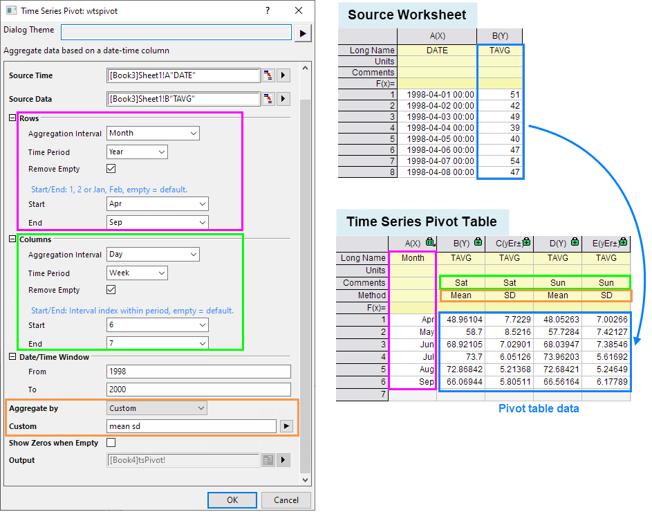
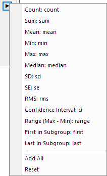
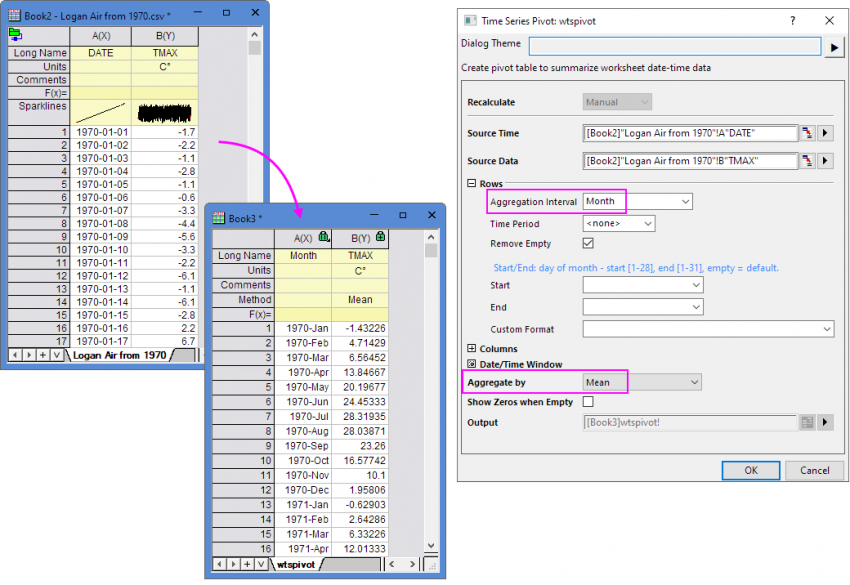
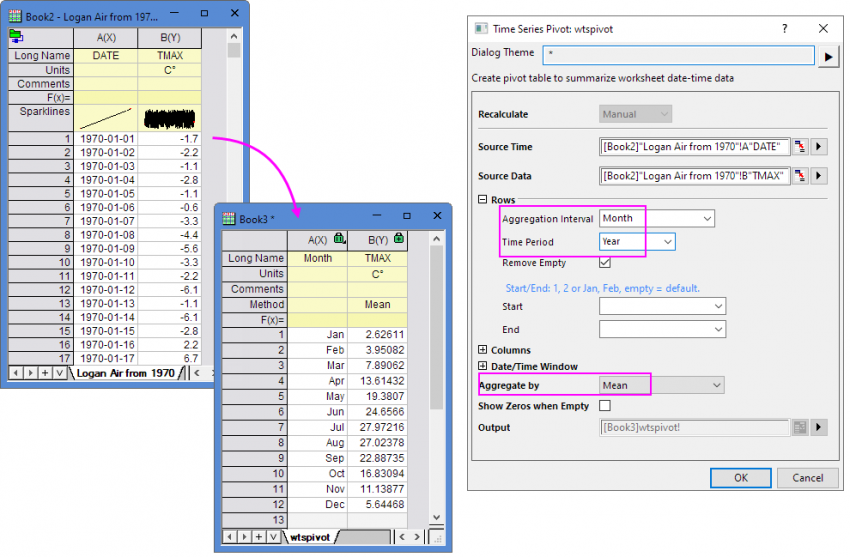
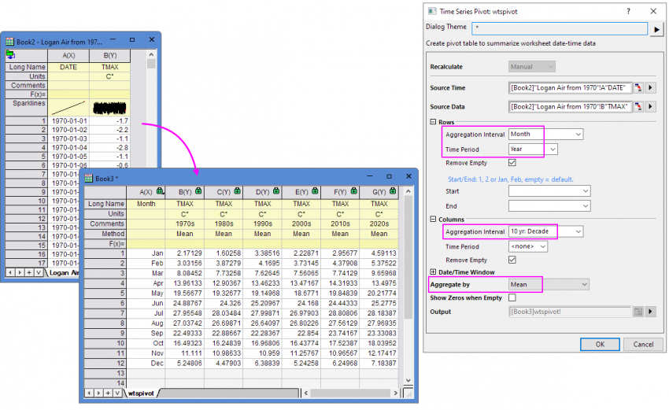
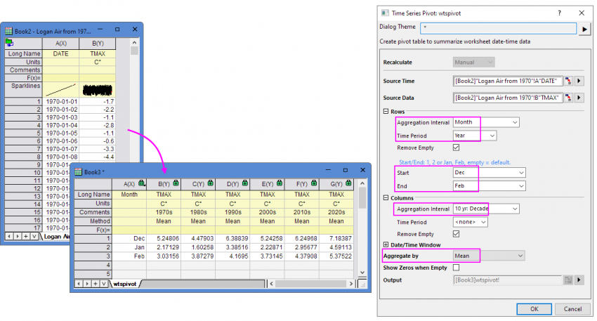
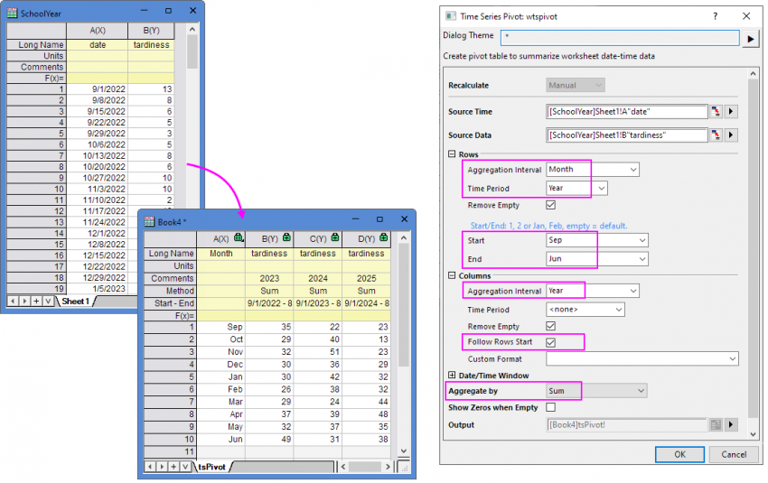
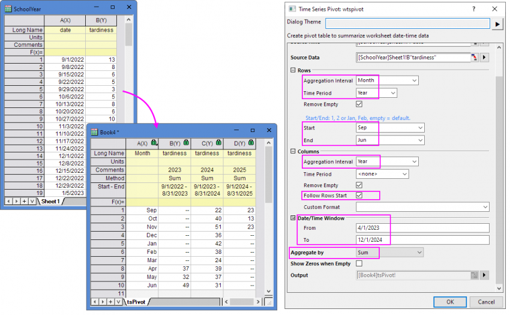

Pivot für Zeitreihen
Time-Series-Pivot
Origin unterstützt das Hilfsmittel Pivot für Zeitreihen, um eine Pivot-Tabelle zu erstellen und mit ihr die Datenzusammenfassung (der Statistik), basierend auf einer Datums-/Zeitspalte, zu visualisieren.
- wählen Sie Restrukturieren: Pivot für Zeitreihen ... im Menü.
Oder:
- Führen Sie
wtspivot -d; im Skript- und Befehlsfenster aus.
Dieses Hilfsmittel verwendet die X-Funktion Wtspivot.

Neuberechnen
Legen Sie den Neuberechnungsmodus fest.
Quelle
| Quellzeit |
Wählen Sie eine Spalte mit dem Datums-/Zeitdatensatz. |
| Quelldaten |
Die Auswahl der Datensätze wird im Ergebnisblatt aggregiert. |
Zeilen
| Aggregationsintervall |
Legen Sie das Aggregationsintervall der Zeit in den Zeilen der Pivot-Tabelle fest. Dieses Zeitintervall wird in der ersten Spalte der Pivot-Tabelle gezeigt.
Sie können diese Optionen in dieser Auswahlliste auswählen:

|
| Zeitraum |
Legen Sie die Zeitgruppe des Aggregationsintervalls fest.
Sie können entsprechend des ausgewählten Aggregationsintervalls den passenden Zeitraum wählen.
- Wenn 10yr:Decade als Aggregationsintervall ausgewählt ist, kann der Zeitraum auf <Keine> festgelegt bleiben.
- Wenn Year als Aggregationsintervall ausgewählt ist, können Sie 10 yr: Decade als Zeitraum auswählen.
- Wenn 3 Month: Quarter, Month, Week oder Day als Aggregationsintervall ausgewählt ist, können Sie Year als Zeitraum auswählen.
- Wenn Week oder Day als Aggregationsintervall ausgewählt ist, können Sie Month als Zeitraum auswählen.
- Wenn Day oder Hour als Aggregationsintervall ausgewählt ist, können Sie Week als Zeitraum auswählen.
- Wenn 30 min, 15min oder Minute als Aggregationsintervall ausgewählt ist, müssen Sie Day oder Hour als Zeitraum auswählen. Der Zeitraum kann nicht auf <Keine> gesetzt bleiben.
|
| Leere entfernen |
Aktivieren Sie dieses Kontrollkästchen, um die leeren Zeilen zu entfernen. |
| Anfang/Ende |
Legen Sie die Anfangs- und Endzeit der Zeilen der Pivot-Tabelle fest. Das Zeitformat von Anfang und Ende basiert auf dem ausgewählten Aggregationsintervall. Ein blauer Hinweis wird diesbezüglich oberhalb des Bearbeitungsfelds gezeigt. Wenn das Bearbeitungsfeld leer bleibt, ist die Standardzeit Anfangs- und Endzeit der Tabelle.
Unter der Einstellung für Zeilen wird das Feld Anfang/Ende in den folgenden Situationen verborgen.
- Wenn Aggregationsintervall = 10 yr: Decade
- Wenn Aggregationsintervall = 3 Month: Quarter und Zeitraum=<Keine>
|
| Benutzerdefiniertes Format |
Passen Sie das Zeitformat, das in der ersten Spalte gezeigt wird, benutzerdefiniert an außer bei einigen Kombinationen von Aggregationsintervall und Zeitraum.
Zum Beispiel: Wenn Aggregationsintervall = Month und Zeitraum = Year, kann dieses Format nicht angepasst werden.
|
Spalten
| Aggregationsintervall |
Legen Sie das Aggregationsintervall der Zeit in den Spalten der Pivot-Tabelle fest. Dieses Zeitintervall wird in der Beschriftungszeile Kommentar der Pivot-Tabelle gezeigt.
Sie können diese Optionen in dieser Auswahlliste auswählen:
|
| Zeitraum |
Legen Sie die Zeitgruppe des Aggregationsintervalls fest.
Sie können entsprechend des ausgewählten Aggregationsintervalls den passenden Zeitraum wählen.
- Wenn 10yr:Decade als Aggregationsintervall ausgewählt ist, kann der Zeitraum auf <Keine> festgelegt bleiben.
- Wenn Year als Aggregationsintervall ausgewählt ist, können Sie 10 yr: Decade als Zeitraum auswählen.
- Wenn 3 Month: Quarter, Month, Week oder Day als Aggregationsintervall ausgewählt ist, können Sie Year als Zeitraum auswählen.
- Wenn Week oder Day als Aggregationsintervall ausgewählt ist, können Sie Month als Zeitraum auswählen.
- Wenn Day oder Hour als Aggregationsintervall ausgewählt ist, können Sie Week als Zeitraum auswählen.
- Wenn 30 min, 15min oder Minute als Aggregationsintervall ausgewählt ist, müssen Sie Day oder Hour als Zeitraum auswählen. Der Zeitraum kann nicht auf <Keine> gesetzt bleiben.
|
| Leere entfernen |
Aktivieren Sie dieses Kontrollkästchen, um die leeren Spalten zu entfernen. |
| Zeilenanfang folgen |
Wenn der Anfangswert der Zeilen größer ist als der Endwert und das Aggregationsintervall der Spalten gleich dem Zeitraum der Zeilen ist. Die Option wird im Dialog gezeigt.
Wenn der Zeitraum der Zeilen auf Year oder Week etc. gesetzt ist, aber nicht am klassischen Jahres- oder Wochenanfang beginnt, können Sie diese Option aktivieren, um die Daten nach Fiskaljahr zusammenzufassen. Wenn die Option deaktiviert ist, werden alle Daten des/r gleichen Kalenderjahres/-woche stattdessen in eine Spalte in einer Spalte abgelegt.
|
| Anfang/Ende |
Legen Sie die Anfangs- und Endzeit der Spalten der Pivot-Tabelle fest. Das Zeitformat von Anfang und Ende basiert auf dem ausgewählten Aggregationsintervall. Ein blauer Hinweis wird diesbezüglich oberhalb des Bearbeitungsfelds gezeigt. Wenn das Bearbeitungsfeld leer bleibt, ist die Standardzeit Anfangs- und Endzeit der Tabelle.
Unter der Einstellung für Spalten wird das Feld Anfang/Ende in den folgenden Situationen verborgen.
- Wenn Aggregationsintervall = 10 yr: Decade
- Wenn Aggregationsintervall = Year/3 Month: Quarter/Week/Day/Hour und Zeitraum=<Keine>
|
| Benutzerdefiniertes Format |
Passen Sie das Zeitformat, das in der Beschriftungszeile Kommentar gezeigt wird, benutzerdefiniert an außer bei einigen Kombinationen von Aggregationsintervall und Zeitraum.
Zum Beispiel: Wenn Aggregationsintervall = Month und Zeitraum = Year, kann dieses Format nicht angepasst werden.
|
Datums-/Zeitfenster
Legen Sie den Datums-/Zeitfensterbereich fest, um den Quelldatenbereich zu steuern, der aggregiert worden ist.
Aggregieren nach
Wählen Sie die Aggregationsmethode, um die Quelldaten zusammenzufassen, einschließlich
Benutzerdefiniert
Nur verfügbar, wenn Aggregieren nach auf Benutzerdefiniert gesetzt ist. Legen Sie die Zusammenfassungsmethode im Kombinationsfeld fest. Die dreieckige Schaltfläche neben dem Bearbeitungsfeld bietet einige häufig verwendete Statistikgrößen. Sie können sie mischen und Ihre eigene Zusammenfassungsmethode zusammenstellen. Sie können auch alle Methoden hinzufügen oder die Auswahl durch dieses Menü zurücksetzen.

Nullen zeigen, wenn leer
Legen Sie fest, ob die fehlenden Werte in der Pivot-Tabelle als Nullen angezeigt werden sollen.
Ausgabe
Legen Sie fest, wo die Pivot-Tabelle mit den Ergebnissen der Zeitreihen tsPivot ausgegeben wird. Klicken Sie auf die dreieckige Schaltfläche, um die Ausgabemethode festzulegen.
[<Eingabe>]<Eingabe>: Die Pivot-Tabelle der Zeitreihen wird in das aktuelle Arbeitsblatt eingefügt.
<neu>: Die Pivot-Tabelle der Zeitreihen wird in ein neues Blatt der aktuellen Arbeitsmappe eingefügt.
[<neu>]<neu>: Die Pivot-Tabelle der Zeitreihen wird in eine neue Arbeitsmappe eingefügt.
Beispiele
Daten nur zeilenweise zusammenfassen
Wir haben hier die täglichen maximalen Temperaturdaten von 1970-01-01 bis 2023-12-31.
Beispiel 1:Um den Mittelwert der max. Temperatur in jedem Monat zwischen 1970 und 2023 zusammenzufassen:
- Setzen Sie das Aggregationsintervall: Month unter Zeilen. Danach können Sie die Daten der max. Temperatur in jedem Monat zusammenfassen. Es gibt keinen Zeitraum. Jeder Monat der verschiedenen Jahre hat eine separate Zeile.

- Setzen Sie das Aggregationsintervall: Month und den Zeitraum: Year unter Zeilen. Danach wird der jeweils gleiche Monat der unterschiedlichen Jahre zusammengefasst, so dass sich in der Ausgabe nur 12 Zeilen befinden.

Daten sowohl spalten- als auch zeilenweise zusammenfassen
Wir haben hier die täglichen maximalen Temperaturdaten von 1970-01-01 bis 2023-12-31.
Beispiel 2:Um den Mittelwert der max. Temperatur von jedem Monat für jedes Jahrzehnt zusammenzufassen:
- Setzen Sie das Aggregationsintervall: Month und den Zeitraum: Year unter Zeilen und das Aggregationsintervall: 10 yr: Decade unter Spalten.

- Wenn Sie sich nur auf den Temperaturwechsel im Winter konzentrieren möchten, folgen Sie den obigen Einstellungen und setzen Sie dann Anfang: Dec und Ende: Feb unter Zeilen.

Daten nach Fiskaljahr zusammenfassen
Wenn die zusammengefassten Daten nicht beim klassischen Anfang des Jahres oder der Woche beginnen und der Zeitraum der Zeilen auf Year oder Week etc. festgelegt ist, dann können Sie Zeilenanfang folgen verwenden, um die Daten für das Fiskaljahr zusammenzufassen.
Wir haben hier Beispieldaten für die Verspätungen des Schuljahres von 9/1/2022 bis 6/25/2025. Dieses Fiskaljahr beginnt am 1. September und endet am 30. Juni des nächsten Jahres.
Beispiel 3:Um den Summenwert der Verspätungen in jedem Monat für das Fiskaljahr zusammenzufassen:
- Setzen Sie das Aggregationsintervall: Month und den Zeitraum: Year unter Zeilen und das Aggregationsintervall: Year unter Spalten und aktivieren Sie die Option Zeilenanfang folgen.

- Wenn Sie den Datenbereich für den Datensazu festlegen möchten, folgen Sie den obigen Einstellungen und füllen Sie den Datums-/Zeitbereich unter Datums-/Zeitfenster zum Beispiel mit von 4/1/2023 bis 12/1/2024 aus.
